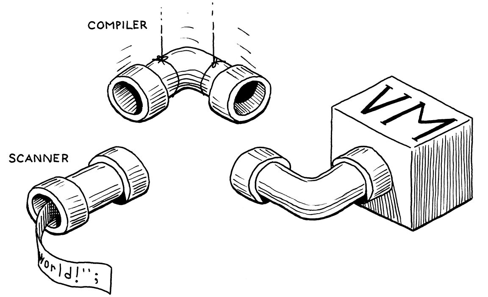
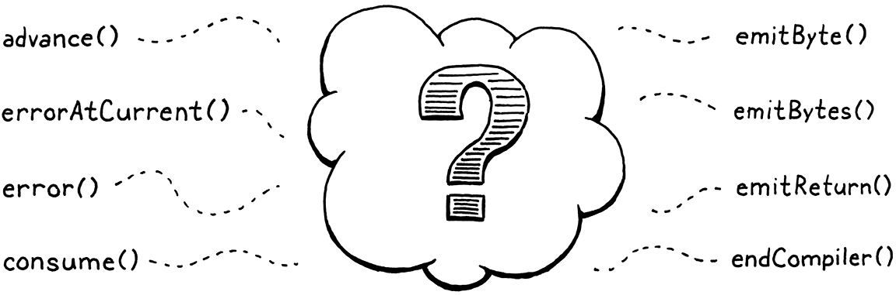
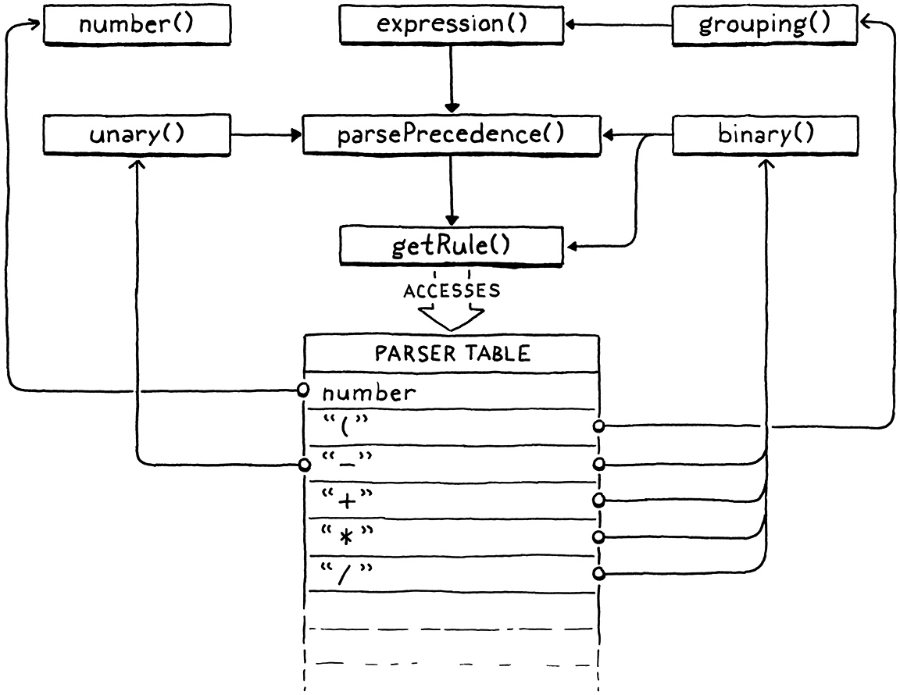

Compiling Expressions
This book is a work in progress!
×If you see a mistake, find something unclear, or have a suggestion, please let me know. To follow its progress, please join the mailing list:
(I post about once a month. Don’t worry, I won’t spam you.)
In the middle of the journey of our life I found myself within a dark woods where the straight way was lost.
Dante Alighieri, Inferno
This chapter is exciting for not one, not two, but three reasons. First, it provides the final segment of our VM’s execution pipeline. Once in place, we can plumb the user’s source code from scanning all the way through to executing it.
Second, we get to write an actual, honest-to-God compiler. It parses source code and outputs a low-level series of binary instructions. Sure, it’s bytecode and not some chip’s native instruction set, but it’s way closer to the metal than jlox was. We’re about to be real language hackers.
Third and finally, I get to show you one of my absolute favorite algorithms: Vaughan Pratt’s “top-down operator precedence parsing”. It’s the most elegant way I know to parse expressions. It gracefully handles prefix operators, postfix, infix, mixfix, any kind of -fix you got. It deals with precedence and associativity without breaking a sweat. I love it.
As usual, before we get to the fun stuff, we’ve got some preliminaries to work through. You have to eat your vegetables before you get dessert. First, let’s ditch that temporary scaffolding we wrote for testing the scanner and replace it with something more useful:
InterpretResult interpret(const char* source) {
in interpret()
replace 2 lines
Chunk chunk; initChunk(&chunk); if (!compile(source, &chunk)) { freeChunk(&chunk); return INTERPRET_COMPILE_ERROR; } vm.chunk = &chunk; vm.ip = vm.chunk->code; InterpretResult result = run(); freeChunk(&chunk); return result;
}
We create a new empty chunk and pass it over to the compiler. The compiler will
take the user’s program and fill up the chunk with bytecode. At least, that’s
what it will do if the program doesn’t have any compile errors. If it does
encounter an error, compile() returns false and we discard the unusable
chunk.
Otherwise, we send the completed chunk over to the VM to be executed. When the
VM finishes, we free the chunk and we’re done. As you can see, the signature to
compile() is different now:
#define clox_compiler_h
replace 1 line
#include "vm.h" bool compile(const char* source, Chunk* chunk);
#endif
We pass in the chunk where the compiler will write the code, and then
compile() returns whether or not compilation succeeded. Over in the
implementation…
#include "scanner.h"
function compile()
replace 1 line
bool compile(const char* source, Chunk* chunk) {
initScanner(source);
That call to initScanner() is the only line that survives this chapter. Rip
out the temporary code we wrote to test the scanner and replace it with these
three lines:
initScanner(source);
in compile()
replace 13 lines
advance(); expression(); consume(TOKEN_EOF, "Expect end of expression.");
}
The call to advance() “primes the pump” on the scanner. We’ll see what it does
soon. Then we parse a single expression. We aren’t going to do statements yet,
so that’s the only subset of the grammar we support. We’ll revisit this when we
add statements in a few chapters. After we compile the expression, we
should be at the end of the source code, so we check for the sentinel EOF token.
We’re going to spend the rest of the chapter making this function work,
especially that little expression() call. Normally, we’d dive right into that
function definition and work our way through the implementation from top to
bottom.
This chapter is different. Pratt’s parsing technique is remarkably simple once you have it all loaded in your head, but it’s a little tricky to break into bite-sized pieces. It’s recursive, of course, which is part of the problem. But it also relies on a big table of data. As we build up the algorithm, that table grows additional columns.
I don’t want to revisit 40-something lines of code each time we extend the table. So we’re going to work our way into the core of the parser from the outside and cover all of the surrounding bits before we get to the juicy center. This will require a little more patience and mental scratch space than most chapters, but it’s the best I could do.
17 . 1Single-Pass Compilation
A compiler has roughly two jobs. It parses the user’s source code to understand what it means. Then it takes that knowledge and outputs low-level instructions that produce the same semantics. Many languages split those two roles into two separate passes in the implementation. A parser produces an AST—just like jlox does—and then a “code generator” traverses the AST and outputs target code.
In clox, we’re taking an old school approach and merging these two passes into one. Back in the day, language hackers did this because computers literally didn’t have enough memory to store an entire source file’s AST. We’re doing it because it keeps our compiler simpler, which is a real asset when programming in C.
“Single-pass compilers” like we’re going to build don’t work well for all languages. Since the compiler only has a peephole view into the user’s program while generating code, the language must be designed such that you don’t need much surrounding context to understand a piece of syntax. Fortunately, tiny, dynamically-typed Lox is well-suited to that.
What this means in practical terms is that our “compiler” C module has functionality you’ll recognize from jlox for parsing—consuming tokens, matching expected token types, etc. And it also has functions for code gen—emitting bytecode and adding constants to the destination chunk. (And it means I’ll use “parsing” and “compiling” interchangeably throughout this and later chapters.)
We’ll build those two ends up first. Then we’ll stitch them together with the code in the middle that uses Pratt’s technique to parse Lox’s particular grammar and output the right bytecode.
17 . 2Parsing Tokens
First up, the front half of the compiler. This function’s name should sound familiar:
#include "scanner.h"
static void advance() { parser.previous = parser.current; for (;;) { parser.current = scanToken(); if (parser.current.type != TOKEN_ERROR) break; errorAtCurrent(parser.current.start); } }
Just like in jlox, it steps forward through the token stream. It asks the scanner for the next token and stores it for later use. Before doing that, it takes the old current token and stashes that in another field. That will come in handy later so that we can get at the lexeme after we match a token.
The code to read the next token is wrapped in a loop. Remember, clox’s scanner doesn’t report lexical errors. Instead, it creates special “error tokens” and leaves it up to the parser to report them. We do that here.
We keep looping, reading tokens and reporting the errors, until we hit a non-error one or reach the end. That way, the rest of the parser only sees “real” tokens. The current and previous token are stored in this struct:
#include "scanner.h"
typedef struct { Token current; Token previous; } Parser; Parser parser;
static void advance() {
Like we did in other modules, we have a single global variable of this struct type so we don’t need to pass the state around from function to function in the compiler.
17 . 2 . 1Handling syntax errors
If the scanner hands us an error token, we need to actually tell the user. That happens using this:
add after variable Parser
static void errorAtCurrent(const char* message) { errorAt(&parser.current, message); }
We pull the location out of the current token in order to tell the user where
the error occurred and forward it to errorAt(). More often, we’ll report an
error at the location of the token we just consumed, so we give the shorter name
to this other function:
add after variable Parser
static void error(const char* message) { errorAt(&parser.previous, message); }
The actual work happens here:
add after variable Parser
static void errorAt(Token* token, const char* message) { fprintf(stderr, "[line %d] Error", token->line); if (token->type == TOKEN_EOF) { fprintf(stderr, " at end"); } else if (token->type == TOKEN_ERROR) { // Nothing. } else { fprintf(stderr, " at '%.*s'", token->length, token->start); } fprintf(stderr, ": %s\n", message); parser.hadError = true; }
First, we print where the error occurred. We try to show the lexeme if it’s
human-readable. Then we print the error message itself. After that, we set this
hadError flag. That records whether any errors occurred during compilation.
It also lives in the parser struct:
Token previous;
in struct Parser
bool hadError;
} Parser;
Earlier I said that compile() should return false if an error occurred. Now
we can make it do that:
consume(TOKEN_EOF, "Expect end of expression.");
in compile()
return !parser.hadError;
}
I’ve got another flag for error handling to introduce. We want to avoid error cascades. If the user has a mistake in their code and the parser gets confused about where it is in the grammar, we don’t want it to spew out a whole pile of meaningless knock-on errors after the first one.
We fixed that in jlox using panic mode error recovery. In the Java interpreter, we threw an exception to unwind out of all of the parser code to a point where we could skip tokens and resynchronize. We don’t have exceptions in C. Instead, we’ll do a little smoke and mirrors. We add a flag to track whether we’re currently in panic mode:
bool hadError;
in struct Parser
bool panicMode;
} Parser;
When an error occurs, we set it:
static void errorAt(Token* token, const char* message) {
in errorAt()
parser.panicMode = true;
fprintf(stderr, "[line %d] Error", token->line);
After that, we go ahead and keep compiling as normal as if the error never occurred. The bytecode will never get executed, so it’s harmless to keep on trucking. The trick is that while the panic mode flag is set, we simply suppress any other errors that get detected:
static void errorAt(Token* token, const char* message) {
in errorAt()
if (parser.panicMode) return;
parser.panicMode = true;
There’s a good chance the parser will go off in the weeds, but the user won’t know because the errors all get swallowed. Panic mode ends when the parser reaches a synchronization point. For Lox, we chose statement boundaries, so when we later add those to our compiler, we’ll clear the flag.
These new fields need to be initialized:
initScanner(source);
in compile()
parser.hadError = false; parser.panicMode = false;
advance();
And to display the errors, we need a standard header:
#include <stdio.h>
#include <stdlib.h>
#include "common.h"
There’s one last parsing function, another old friend from jlox:
add after advance()
static void consume(TokenType type, const char* message) { if (parser.current.type == type) { advance(); return; } errorAtCurrent(message); }
It’s similar to advance() in that it reads the next token. But it also
validates that the token has an expected type. If not, it reports an error. This
function is the foundation of most syntax errors in the compiler.
OK, that’s enough on the front end for now.
17 . 3Emitting Bytecode
After we parse and understand a piece of the user’s program, the next step is to translate that to a series of bytecode instructions. It doesn’t get more fundamental than appending a single byte to the chunk:
add after consume()
static void emitByte(uint8_t byte) { writeChunk(currentChunk(), byte, parser.previous.line); }
It’s hard to believe great things will flow through such a simple function. It writes the given byte, which may be an opcode or an operand to an instruction. It sends in the previous token’s line information so that runtime errors are associated with that line.
The chunk that we’re writing gets passed into compile(), but it needs to make
its way to emitByte(). To do that, we rely on this intermediary function:
Parser parser;
add after variable Parser
Chunk* compilingChunk; static Chunk* currentChunk() { return compilingChunk; }
static void errorAt(Token* token, const char* message) {
Right now, the chunk pointer is stored in a module level variable like we store other global state. Later, when we start compiling user-defined functions, the notion of “current chunk” gets more complicated. To avoid having to go back and change a lot of code, I encapsulate that logic in this function.
We initialize this new module variable before we write any bytecode:
bool compile(const char* source, Chunk* chunk) {
initScanner(source);
in compile()
compilingChunk = chunk;
parser.hadError = false;
Then, at the very end, when we’re done compiling the chunk, we wrap things up:
consume(TOKEN_EOF, "Expect end of expression.");
in compile()
endCompiler();
return !parser.hadError;
That calls this:
add after emitByte()
static void endCompiler() { emitReturn(); }
In this chapter, our VM only deals with expressions. When you run clox, it
parses, compiles, and executes a single expression, then prints the result. To
print that value, we are temporarily using the OP_RETURN instruction. So we
have the compiler add one of those to the end of the chunk:
add after emitByte()
static void emitReturn() { emitByte(OP_RETURN); }
While we’re over here in the back end:
add after emitByte()
static void emitBytes(uint8_t byte1, uint8_t byte2) { emitByte(byte1); emitByte(byte2); }
Over time, we’ll have enough cases where we need to write an opcode followed by a one-byte operand that it’s worth defining this convenience function.
17 . 4Parsing Prefix Expressions
We’ve assembled our parsing and code generation functions. The missing piece is the code in the middle that connects those together.
The only step in compile() that we have left to implement is this function:
add after endCompiler()
static void expression() { // What goes here? }
We aren’t ready to implement every kind of expression in Lox yet. Heck, we don’t even have Booleans. For this chapter, we’re only going to worry about:
- Number literals:
123. - Parentheses for grouping:
(123). - Unary negation:
-123. - The Four Horsemen of the Arithmetic:
+,-,*,/.
As we work through the functions to compile each of those kinds of expressions, we’ll also assemble the requirements for the table-driven parser that calls them.
17 . 4 . 1Parsers for tokens
Imagine that every expression in Lox is only a single token. Each token type
maps to a different kind of expression. We define a function for each that
outputs the appropriate bytecode for that expression. Then we build an array of
function pointers. The indexes in the array correspond to the TokenType enum
values, and the function at that index is the code to compile an expression of
that token type.
To add support for number literals, we store a pointer to the following function
at the TOKEN_NUMBER index in the array:
add after endCompiler()
static void number() { double value = strtod(parser.previous.start, NULL); emitConstant(value); }
We assume the token for the number literal has already been consumed and is
stored in previous. We take that lexeme and use the C standard library to
convert it to a double value. Then we generate the code to load that value using
this function:
add after emitReturn()
static void emitConstant(Value value) { emitBytes(OP_CONSTANT, makeConstant(value)); }
First, we add the value to the constant table, then we emit an OP_CONSTANT
instruction that pushes it onto the stack at runtime. To insert an entry in the
constant table, we rely on:
add after emitReturn()
static uint8_t makeConstant(Value value) { int constant = addConstant(currentChunk(), value); if (constant > UINT8_MAX) { error("Too many constants in one chunk."); return 0; } return (uint8_t)constant; }
Most of the work happens in addConstant(), which we defined back in an
earlier chapter. That adds the given value to the end of the chunk’s
constant table and returns its index. The new function’s job is mostly to make
sure we don’t have too many constants. Since the OP_CONSTANT instruction uses
a single byte for the index operand, we can only store and load up to 256 constants in a chunk.
That’s basically all it takes. Provided there is some suitable code that
consumes a TOKEN_NUMBER token and then calls number(), we can now compile
number literals to bytecode.
17 . 4 . 2Parentheses for grouping
Our as-yet-imaginary array of parsing function pointers would be great if every
expression was only a single token long. Alas, most are longer. However, many
expressions start with a particular token. We call these prefix expressions.
For example, when we’re parsing an expression and the current token is (, we
know we must be looking at a parenthesized grouping expression.
It turns out our function pointer array handles those too. The parsing function for an expression type can consume any additional tokens that it wants to, just like in a regular recursive descent parser. Here’s how parentheses work:
add after endCompiler()
static void grouping() { expression(); consume(TOKEN_RIGHT_PAREN, "Expect ')' after expression."); }
Again, we assume the initial ( has already been consumed. We recursively call back into expression() to compile the
expression between the parentheses, then parse the closing ) at the end.
As far as the back end is concerned, there’s literally nothing to a grouping
expression. Its sole function is syntactic—it lets you insert a lower
precedence expression where a higher precedence is expected. Thus, it has no
runtime semantics on its own and therefore doesn’t emit any bytecode. The inner
call to expression() takes care of generating bytecode for the expression
inside the parentheses.
17 . 4 . 3Unary negation
Unary minus is also a prefix expression, so it works with our model too:
add after number()
static void unary() { TokenType operatorType = parser.previous.type; // Compile the operand. expression(); // Emit the operator instruction. switch (operatorType) { case TOKEN_MINUS: emitByte(OP_NEGATE); break; default: return; // Unreachable. } }
The leading - token has been consumed and is sitting in parser.previous. We
grab the token type from that to note which unary operator we’re dealing with.
It’s unnecessary right now, but this will make more sense when we use this same
function to compile the ! operator in the next chapter.
As in grouping(), we recursively call expression() to compile the operand.
After that, we emit the bytecode to perform the negation. It might seem a little
weird to write the negate instruction after its operand’s bytecode since the
- appears on the left, but think about it in terms of order of execution:
-
We evaluate the operand first which leaves its value on the stack.
-
Then we pop that value, negate it, and push the result.
So the OP_NEGATE instruction should be emitted last.
This is part of the compiler’s job—parsing the program in the order it
appears in the source code and rearranging it into the order that execution
happens.
There is one problem with this code, though. The expression() function it
calls will parse any expression for the operand, regardless of precedence. Once
we add binary operators and other syntax, that will do the wrong thing.
Consider:
-a.b + c;
Here, the operand to - should be just the a.b expression, not the entire
a.b + c. But if unary() calls expression(), the latter will happily chew
through all of the remaining code including the +. It will erronously treat
the - as lower precendence than the +.
When parsing the operand to unary -, we need to compile only expressions at a
certain precedence level or higher. In jlox’s recursive descent parser we could
accomplish that by calling into the parsing method for the lowest precendence
expression we wanted to allow (in this case, call()). Each method for parsing
a specific expression also parsed any expressions of higher precedence too, so
that would include the rest of the precedence table.
The parsing functions like number() and unary() here are different. Each
only parses exactly one type of expression. They don’t cascade to include higher
precedence expression types too. We need a different solution, and it looks like
this:
add after unary()
static void parsePrecedence(Precedence precedence) { // What goes here? }
This function, once we implement it, starts at the current token and parses any expression at the given precedence level or higher. We have some other setup to get through before we can write the body of this function, but you can probably guess that it will use that table of parsing function pointers I’ve been talking about. For now, don’t worry too much about how it works. In order to take the “precedence” as a parameter, we define it numerically:
} Parser;
add after struct Parser
typedef enum { PREC_NONE, PREC_ASSIGNMENT, // = PREC_OR, // or PREC_AND, // and PREC_EQUALITY, // == != PREC_COMPARISON, // < > <= >= PREC_TERM, // + - PREC_FACTOR, // * / PREC_UNARY, // ! - PREC_CALL, // . () PREC_PRIMARY } Precedence;
Parser parser;
These are all of Lox’s precedence levels in order from lowest to highest. Since
C implicitly gives successively larger numbers for enums, this means that
PREC_CALL is numerically larger than PREC_UNARY. For example, say the
compiler is sitting on a chunk of code like:
-a.b + c
If we call parsePrecedence(PREC_ASSIGNMENT), then it will parse the entire
expression because + has higher precedence than assignment. If instead we
call parsePrecedence(PREC_UNARY), it will compile the -a.b and stop there.
It doesn’t keep going through the + because the addition is lower precedence
than unary operators.
With this function in hand, it’s a snap to fill in the missing body for
expression():
static void expression() {
in expression()
replace 1 line
parsePrecedence(PREC_ASSIGNMENT);
}
We simply parse the lowest precedence level, which subsumes all of the higher precedence expressions too. Now, to compile the operand for a unary expression, we call this new function and limit it to the appropriate level:
// Compile the operand.
in unary()
replace 1 line
parsePrecedence(PREC_UNARY);
// Emit the operator instruction.
We use the unary operator’s own PREC_UNARY precedence to permit nested unary expressions like !!doubleNegative. Since
unary operators have pretty high precedence, that correctly excludes things like
binary operators. Speaking of which…
17 . 5Parsing Infix Expressions
Binary operators are different from the previous expressions because they are infix. With the other expressions, we know what we are parsing from the very first token. With infix expressions, we don’t know we’re in the middle of a binary operator until after we’ve parsed its left operand and then stumbled onto the operator token in the middle.
Here’s an example:
1 + 2
Let’s walk through trying to compile it with what we know so far:
-
We call
expression(). That in turn callsparsePrecedence(PREC_ASSIGNMENT). -
That function (once we implement it) sees the leading number token and recognizes it is parsing a number literal. It hands off control to
number(). -
number()creates a constant, emits anOP_CONSTANT, and returns back toparsePrecedence().
Now what? The call to parsePrecedence() should consume the entire addition
expression, so it needs to keep going somehow. Fortunately, the parser is right
where we need it to be. Now that we’ve compiled the leading number expression,
the next token is +. That’s the exact token that parsePrecedence() needs to
detect that we’re in the middle of an infix expression and to realize that the
expression we already compiled is actually an operand to that.
So this hypothetical array of function pointers doesn’t just list functions to parse expressions that start with a given token. Instead, it’s a table of function pointers. One column associates prefix parser functions with token types. The second column associates infix parser functions with token types.
The function we will use as the infix parser for TOKEN_PLUS, TOKEN_MINUS,
TOKEN_STAR, and TOKEN_SLASH is this:
add after endCompiler()
static void binary() { // Remember the operator. TokenType operatorType = parser.previous.type; // Compile the right operand. ParseRule* rule = getRule(operatorType); parsePrecedence((Precedence)(rule->precedence + 1)); // Emit the operator instruction. switch (operatorType) { case TOKEN_PLUS: emitByte(OP_ADD); break; case TOKEN_MINUS: emitByte(OP_SUBTRACT); break; case TOKEN_STAR: emitByte(OP_MULTIPLY); break; case TOKEN_SLASH: emitByte(OP_DIVIDE); break; default: return; // Unreachable. } }
When a prefix parser function is called, the leading token has already been consumed. An infix parser function is even more in medias res—the left-hand operand has already been compiled and the subsequent infix operator consumed.
The fact that the left operand gets compiled first works out fine. It means at runtime, that code gets executed first. When it runs, the value it produces will end up on the stack. That’s right where the infix operator is going to need it.
Then we come here to binary() to handle the rest of the arithmetic operator.
It compiles the right operand, much like how unary() compiles its own trailing
operand. Finally, it emits the bytecode instruction that performs the binary
operation.
When run, the VM will execute the left and right operand code, in that order, leaving their values on the stack. Then it executes the instruction for the operator. That pops the two values, computes the operation, and pushes the result.
The code that probably caught your eye here is that getRule() line. When we
parse the right-hand operand, we again need to worry about precedence. Take an
expression like:
2 * 3 + 4
When we parse the right operand of the * expression, we need to just capture
3, and not 3 + 4, because + is lower precedence than *. We could define
a separate function for each binary operator. Each would call
parsePrecedence() and pass in the correct precedence level for its operand.
But that’s kind of tedious. Each binary operator’s right-hand operand precedence
is one level higher than its own. We can look that up
dynamically with this getRule() thing we’ll get to soon. Using that, we call
parsePrecedence() with one level higher than this operator’s level.
This way, we can use a single binary() function for all binary arithmetic
operators even though they have different precedences.
17 . 6A Pratt Parser
We now have all of the pieces and parts of the compiler laid out. We have a
function for each grammar production: number(), grouping(), unary(), and
binary(). We still need to implement parsePrecedence(), and getRule(). We
also know we need some table that, given a token type, lets us find:
-
The function to compile a prefix expression starting with a token of that type.
-
The function to compile an infix expression whose left operand is followed by a token of that type.
-
The precedence of an infix expression that uses that token as an operator.
We wrap these three properties in a little struct which represents a single row in the parser table:
} Precedence;
add after enum Precedence
typedef struct { ParseFn prefix; ParseFn infix; Precedence precedence; } ParseRule;
Parser parser;
That ParseFn type is a simple typedef for a function type that takes no arguments and returns nothing:
} Precedence;
add after enum Precedence
typedef void (*ParseFn)();
typedef struct {
The table that drives our whole parser is an array of ParseRules. We’ve been talking about it forever, and finally you get to see it:
add after unary()
ParseRule rules[] = { [TOKEN_LEFT_PAREN] = {grouping, NULL, PREC_NONE}, [TOKEN_RIGHT_PAREN] = {NULL, NULL, PREC_NONE}, [TOKEN_LEFT_BRACE] = {NULL, NULL, PREC_NONE}, [TOKEN_RIGHT_BRACE] = {NULL, NULL, PREC_NONE}, [TOKEN_COMMA] = {NULL, NULL, PREC_NONE}, [TOKEN_DOT] = {NULL, NULL, PREC_NONE}, [TOKEN_MINUS] = {unary, binary, PREC_TERM}, [TOKEN_PLUS] = {NULL, binary, PREC_TERM}, [TOKEN_SEMICOLON] = {NULL, NULL, PREC_NONE}, [TOKEN_SLASH] = {NULL, binary, PREC_FACTOR}, [TOKEN_STAR] = {NULL, binary, PREC_FACTOR}, [TOKEN_BANG] = {NULL, NULL, PREC_NONE}, [TOKEN_BANG_EQUAL] = {NULL, NULL, PREC_NONE}, [TOKEN_EQUAL] = {NULL, NULL, PREC_NONE}, [TOKEN_EQUAL_EQUAL] = {NULL, NULL, PREC_NONE}, [TOKEN_GREATER] = {NULL, NULL, PREC_NONE}, [TOKEN_GREATER_EQUAL] = {NULL, NULL, PREC_NONE}, [TOKEN_LESS] = {NULL, NULL, PREC_NONE}, [TOKEN_LESS_EQUAL] = {NULL, NULL, PREC_NONE}, [TOKEN_IDENTIFIER] = {NULL, NULL, PREC_NONE}, [TOKEN_STRING] = {NULL, NULL, PREC_NONE}, [TOKEN_NUMBER] = {number, NULL, PREC_NONE}, [TOKEN_AND] = {NULL, NULL, PREC_NONE}, [TOKEN_CLASS] = {NULL, NULL, PREC_NONE}, [TOKEN_ELSE] = {NULL, NULL, PREC_NONE}, [TOKEN_FALSE] = {NULL, NULL, PREC_NONE}, [TOKEN_FOR] = {NULL, NULL, PREC_NONE}, [TOKEN_FUN] = {NULL, NULL, PREC_NONE}, [TOKEN_IF] = {NULL, NULL, PREC_NONE}, [TOKEN_NIL] = {NULL, NULL, PREC_NONE}, [TOKEN_OR] = {NULL, NULL, PREC_NONE}, [TOKEN_PRINT] = {NULL, NULL, PREC_NONE}, [TOKEN_RETURN] = {NULL, NULL, PREC_NONE}, [TOKEN_SUPER] = {NULL, NULL, PREC_NONE}, [TOKEN_THIS] = {NULL, NULL, PREC_NONE}, [TOKEN_TRUE] = {NULL, NULL, PREC_NONE}, [TOKEN_VAR] = {NULL, NULL, PREC_NONE}, [TOKEN_WHILE] = {NULL, NULL, PREC_NONE}, [TOKEN_ERROR] = {NULL, NULL, PREC_NONE}, [TOKEN_EOF] = {NULL, NULL, PREC_NONE}, };
There are a lot of NULL and PREC_NONE values in here. Most of those are
because there is no expression associated with those tokens. You can’t start an
expression with, say, else, and } would make for a pretty confusing infix
operator.
But, also, we haven’t filled in the entire grammar yet. In later chapters, as we add new expression types, some of these slots will get functions in them. One of the things I like about this approach to parsing is that it makes it very easy to see which tokens are in use by the grammar and which are available.
Now that we have the table, we are finally ready to write the code that uses it.
This is where our Pratt parser comes to life. The easiest function to define is
getRule():
add after parsePrecedence()
static ParseRule* getRule(TokenType type) { return &rules[type]; }
It simply returns the rule at the given index. It’s called by binary() to look
up the precedence of the current operator. This function exists solely to handle
a declaration cycle in the C code. binary() is defined before the rules
table so that the table can store a pointer to it. That means the body of
binary() cannot access the table directly.
Instead, we wrap the lookup in a function. That lets us forward declare
getRule() before the definition of binary(), and then define getRule() after the table. We’ll need a
couple of other forward declarations to handle the fact that our grammar is
recursive, so let’s get them all out of the way:
emitReturn(); }
add after endCompiler()
static void expression(); static ParseRule* getRule(TokenType type); static void parsePrecedence(Precedence precedence);
static void binary() {
If you’re following along and implementing clox yourself, pay close attention to the little annotations that tell you where to put these code snippets. Don’t worry, though, if you get it wrong, the C compiler will be happy to tell you.
17 . 6 . 1Parsing with precedence
Now we’re getting to the fun stuff. The maestro that orchestrates all of the
parsing functions we’ve defined is parsePrecedence(). Let’s start with parsing
prefix expressions:
static void parsePrecedence(Precedence precedence) {
in parsePrecedence()
replace 1 line
advance(); ParseFn prefixRule = getRule(parser.previous.type)->prefix; if (prefixRule == NULL) { error("Expect expression."); return; } prefixRule();
}
It reads the next token and looks up the corresponding ParseRule. If there is no prefix parser then the token must be a syntax error. We report that and return to the caller.
Otherwise, we call that prefix parse function and let it do its thing. That prefix parser compiles the rest of the prefix expression, consumes any other tokens it needs, and returns back here. Infix expressions are where it gets challenging, since precedence comes into play. The implementation is remarkably simple:
prefixRule();
in parsePrecedence()
while (precedence <= getRule(parser.current.type)->precedence) { advance(); ParseFn infixRule = getRule(parser.previous.type)->infix; infixRule(); }
}
That’s the whole thing. Really. Here’s how the entire function works: At the
beginning of parsePrecedence(), we look up a prefix parser for the current
token. The first token is always going to belong to some kind of prefix
expression, by definition. It may turn out to be nested as an operand inside one
or more infix expressions, but as you read the code from left to right, the
first thing you hit is always some prefix expression.
After parsing that, which may consume more tokens, the prefix expression is
done. Now we look for an infix parser for the next token. If we find one, it
means the prefix expression we already compiled might be an operand for it. But
only if the call to parsePrecedence() has a precedence that is low enough to
permit that infix operator.
If the next token is too low precedence, or isn’t an infix operator at all,
we’re done. We’ve parsed as much expression as we can. Otherwise, we consume the
operator and hand off control to the infix parser we found. It consumes whatever
other tokens it needs (usually the right operand) and returns back to
parsePrecedence(). Then we loop back around and see if the next token is
also a valid infix operator that can take the entire preceding expression as its
operand.
We keep looping like that, crunching through infix operators and their operands
until we hit a token that isn’t an infix operator or is too low precedence. This
function is fairly short, but kind of tricky since each of those prefix and
infix parsers often calls back into parsePrecedence() for its operands.
That’s a lot of prose, but if you really want to mind meld with Vaughan Pratt and fully understand the algorithm, step through the parser in your debugger as it works through some expressions. Maybe a picture will help. There’s only a handful of functions, but they are marvelously intertwined:

We’ll need to tweak the code in this chapter later to handle assignment. But,
otherwise, what we wrote covers all of our expression compiling needs for the
rest of the book. We’ll plug additional parsing functions into the table when we
add new kinds of expressions, but parsePrecedence() is complete.
17 . 7Dumping Chunks
While we’re here in the core of our compiler, we should put in some instrumentation. To help debug the generated bytecode, we’ll add support for dumping the chunk once the compiler finishes. We had some temporary logging earlier when we hand-authored the chunk. Now we’ll put in some real code so that we can enable it whenever we want.
Since this isn’t for end users, we hide it behind a flag:
#include <stdint.h>
#define DEBUG_PRINT_CODE
#define DEBUG_TRACE_EXECUTION
When that flag is defined, we use our existing “debug” module to print out the chunk’s bytecode:
emitReturn();
in endCompiler()
#ifdef DEBUG_PRINT_CODE if (!parser.hadError) { disassembleChunk(currentChunk(), "code"); } #endif
}
We only do this if the code was free of errors. After a syntax error, the compiler keeps on going but it’s in kind of a weird state and might produce broken code. That’s harmless because it won’t get executed, but we’ll just confuse ourselves if we try to read it.
Finally, to access disassembleChunk(), we need to include its header:
#include "scanner.h"
#ifdef DEBUG_PRINT_CODE #include "debug.h" #endif
typedef struct {
We made it! This was the last major section to install in our VM’s compilation and execution pipeline. Our interpreter doesn’t look like much, but inside it is scanning, parsing, compiling to bytecode, and executing it.
Fire up the VM and type in an expression. If we did everything right, it should calculate and print the result. We now have a very over-engineered arithmetic calculator. We have a lot of language features to add in the coming chapters, but the foundation is in place.
Challenges
-
To really understand the parser, you need to see how execution threads through the interesting parsing functions—
parsePrecedence()and the parser functions stored in the table. Take this (strange) expression:(-1 + 2) * 3 - -4
Write a trace of how those functions are called. Show the order they are called, which calls which, and the arguments passed to them.
-
The ParseRule row for
TOKEN_MINUShas both prefix and infix function pointers. That’s because-is both a prefix operator (unary negation) and an infix one (subtraction).In the full Lox language, what other tokens can be used in both prefix and infix positions? What about in C or another language of your choice?
-
You might be wondering about more complex “mixfix” expressions that have more than two operands separated by tokens. C’s conditional or “ternary” operator,
?:is a widely-known one.Add support for that operator to the compiler. You don’t have to generate any bytecode, just show how you would hook it up to the parser and handle the operands.
Design Note: It’s Just Parsing
I’m going to make a claim here that will be unpopular with some compiler and language people. It’s OK if you don’t agree. Personally, I learn more from strongly-stated opinions that I disagree with than I do from several pages of qualifiers and equivocation. My claim is that parsing doesn’t matter.
Over the years, many programming language people, especially in academia, have gotten really into parsers and taken them very seriously. Initially, it was the compiler folks who got into compiler-compilers, LALR and other stuff like that. The first half of the Dragon book is a long love letter to the wonders of parser generators.
Later, the functional programming folks got into parser combinators, packrat parsers and other sorts of things. Because, obviously, if you give a functional programmer a problem, the first thing they’ll do is whip out a pocketful of higher-order functions.
Over in math and algorithm analysis land, there is a long legacy of research into proving time and memory usage for various parsing techniques, transforming parsing problems into other problems and back, and assigning complexity classes to different grammars.
At one level, this stuff is important. If you’re implementing a language, you want some assurance that your parser won’t go exponential and take 7,000 years to parse a weird edge case in the grammar. Parser theory gives you that bound. As an intellectual exercise, learning about parsing techniques is also fun and rewarding.
But if your goal is just to implement a language and get it in front of users, almost all of that stuff doesn’t matter. It’s really easy to get worked up by the enthusiasm of the people who are into it and think that your front end needs some whiz-bang generated combinator parser factory thing. I’ve seen people burn tons of time writing and rewriting their parser using whatever today’s hot library or technique is.
That’s time that doesn’t add any value to your user’s life. If you’re just trying to get your parser done, pick one of the bog-standard techniques, use it, and move on. Recursive descent, Pratt parsing, and one of the popular parser generators like ANTLR or Bison are all fine.
Take the extra time you saved not rewriting your parsing code and spend it improving the compile error messages your compiler shows users. Good error handling and reporting is more valuable to users than almost anything else you can put time into in the front end.